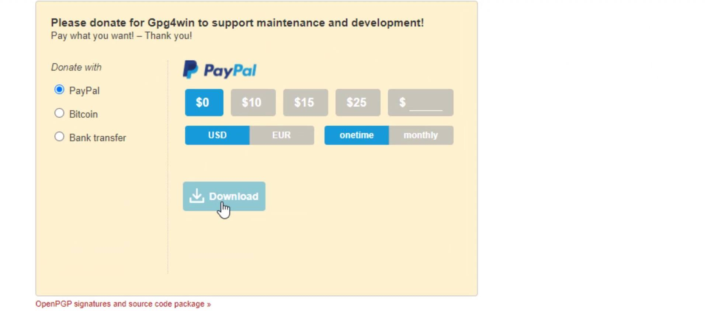
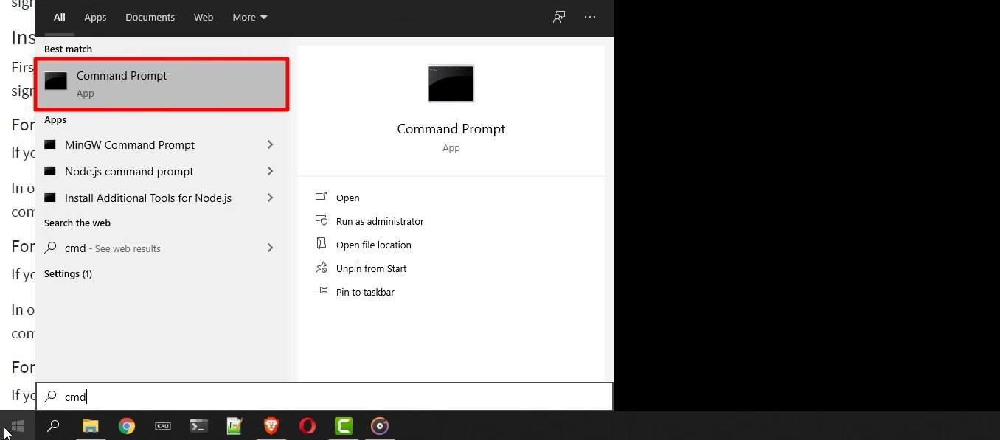
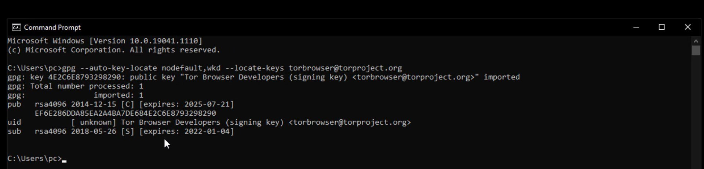
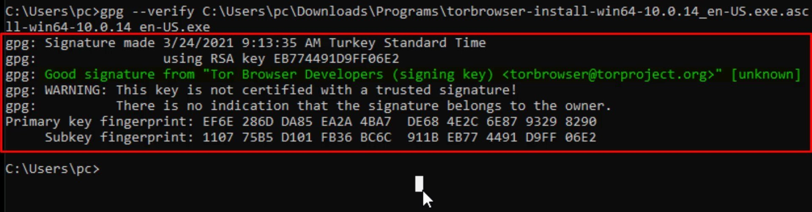
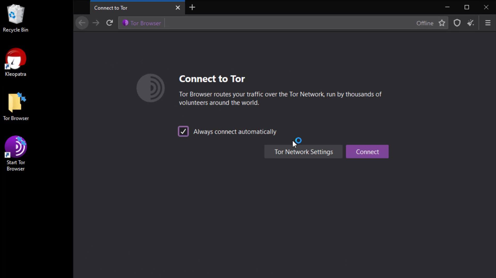

Tor Browser Verification and Installation (Windows)
Before the installation process, you should perform signature check to verify the content of the setup file you downloaded. You can use the official guide to follow the verification steps easily. I added this verification guide link in this lecture sources.
Since you will use the " Gpg4win " tool as i mentioned before to check the signature on Windows, you need to get this tool first.
To download the " gpg4win " tool, open the download page by visiting https://gpg4win.org . If you want to donate, you can specify the amount you want here. If you are not going to donate, select the "0" amount and click the download button.

Now, you can install the tool quickly after the download. During the setup process, you can complete the steps without changing the default settings. It asks to reboot the system when the setup process is complete. You don't have to reboot, so finish the installation process by selecting the reboot later option. That's how easy Gpg4win tool is to install.
In order to verify the signature, you first need to import the developer key. For this, let's run the cmd tool, which is the command prompt on Windows, and enter the command.


When you enter the command correctly, the developer key is imported as you can see.
After this process, let's enter command by specifying the locations of the setup and signature files downloaded. Since the files I download are in the downloads folder, I enter command in this way. When entering the command, it is important that you first specify the signature file, that is, follow the command order. When you click the tab key while typing the file names, the name will be completed automatically.

And as a result, the output i got matched with the developer key i imported, proving that my file is signed by the Tor developers and has not been modified. If your file was a modified file, you wouldn't be able to get this output as this signature match wouldn't be provided. In this case, you need to download the setup file and verification key from an alternative download source again and try this verification process again.
Now that we've verified setup file, we can start the Tor Browser installation by double-clicking the setup file.
You can select the language to be used during the installation process here. I continue unchanged.
Unlike many programs, when the Tor browser is installed, it does not spread throughout the system. It maintains all files in a single file location. We can choose where to location the file from the window that opens.
I am not changing the default file location. If you wish, you can specify a different location. The installation process is completed in a short time. If you want to create a shortcut to the start menu and the desktop, you can click finish without unchecking.
In the window that opens, I click the "Connect" button to connect the browser to the Tor network.

After a short while, the connection is ready and TOR browser is opened without any problems.
Also, when you check, you can confirm that Tor browser is installed in the folder named " Tor Browser " on the desktop . This is how we safely downloaded and installed Tor browser. We will discuss its use in detail in the next lectures.
Finally, I would like to point out that it isn't have to perform the verification process, but it is an extremely important detail for your security. As there is no difficulty at verification steps, I strongly recommend that you verify before the installation process.
In the next lecture, we will perform the same verification and installation process, this time for the Mac operating system. So if you are not using macOS, you can skip the next lecture directly.